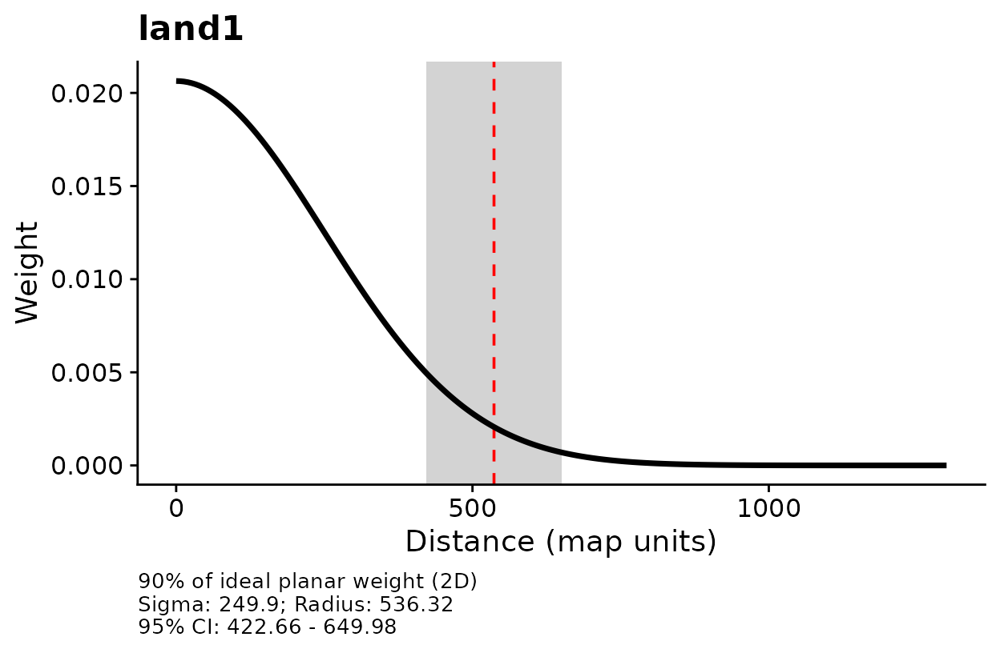
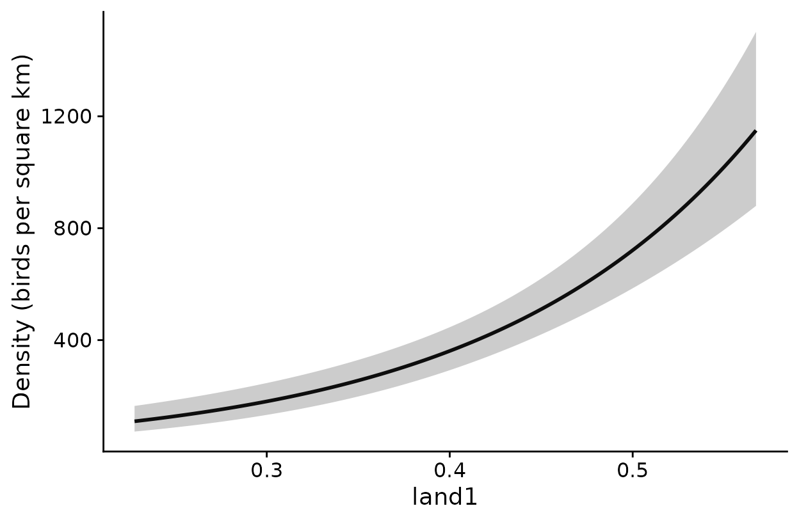
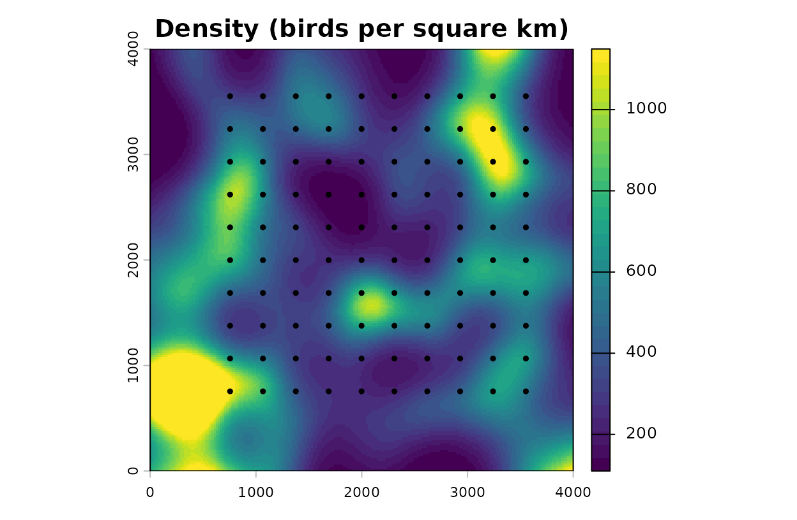

12. Fit Distance-Removal Models with Scales of Effect
Bill Peterman
Source:vignettes/v12-distance-removal.Rmd
v12-distance-removal.RmdWhat this vignette covers
In a distance-removal point count, the observer records how far away
each bird was and the part of the count in which it was first detected.
Those two records let a model separate how many birds were present from
how many the observer missed. This vignette shows how to estimate the
scale of effect of a landscape covariate on bird density inside such a
model, fitted with unmarked::gdistremoval().
You will simulate a survey with known values, prepare the data, fit
the model, estimate the scale of effect, and read the abundance,
availability, and detection results. You will also predict what a whole
survey records and simulate new surveys from the fitted model. The last
section lists what is not supported yet. Read
vignette("v01-quickstart", package = "multiScaleR") first,
because this vignette builds on its four steps. Experience with
unmarked helps but is not required.
Know what data the model needs
unmarked stores a distance-removal survey in an
unmarkedFrameGDR object. A detected bird is removed from
further counting, so only its first detection is used.
| Input | Argument | Contents |
|---|---|---|
| Distance table | yDistance |
One row per survey and one column per distance band. Each entry counts the birds first detected in that band |
| Removal table | yRemoval |
One row per survey and one column per time interval. Each entry counts the birds first detected in that interval |
| Distance bands |
dist.breaks, unitsIn
|
Band boundaries starting at zero. The last boundary is the survey radius |
| Time intervals | period.lengths |
Length of each interval |
| Site covariates | siteCovs |
One row per survey, including the kernel-weighted landscape covariates |
Both tables describe the same birds, so the two rows for a survey must have the same total. The model has four components, and each takes its own formula.
| Component | Formula argument | type |
What it estimates | Link |
|---|---|---|---|---|
| Abundance | lambdaformula |
"lambda" |
Bird density, or abundance per survey circle | Log |
| Availability | phiformula |
"phi" |
Probability that a bird is available during a visit. Estimated only when points are visited more than once | Logit |
| Removal | removalformula |
"rem" |
Probability, per unit of time, that a bird present is first detected | Logit |
| Distance | distanceformula |
"dist" |
Scale of the detection function, or how quickly detection falls with distance | Log |
multiScaleR estimates a scale of effect for a landscape
covariate in any component the model estimates. The example below visits
each point once. Its removal component therefore carries the information
about how readily birds reveal themselves.
Simulate a survey with a known scale of effect
The running count example from the Quick Start does not fit this
model, so this vignette simulates point counts on the same landscape
with sim_dat_gdr().
data("surv_pts") # 100 survey locations (an sf object)
pts <- vect(surv_pts) # convert to a terra SpatVector
# Binary habitat layer on a 20 m grid, in meters
land1 <- rast(system.file("extdata", "landscape.tif",
package = "multiScaleR"))[["land1"]]
# Step 1 of every analysis: extract the raster around each survey point
kernel_inputs <- kernel_prep(pts = pts, raster_stack = land1,
max_D = 1700, kernel = "gaussian",
verbose = FALSE)Density at each point depends on habitat weighted with a Gaussian kernel of sigma = 250 m, the true scale of effect. The comments give the other true values.
# Habitat smoothed at the true scale, then standardized (mean 0, SD 1)
land1_250 <- kernel_scale.raster(raster_stack = land1, sigma = 250,
kernel = "gaussian", verbose = FALSE)
hab_true <- as.numeric(scale(terra::extract(land1_250, pts, ID = FALSE)[, 1]))
sim <- sim_dat_gdr(
density = exp(log(400) + 0.5 * hab_true), # birds per square km
distance_scale = 40, # half-normal detection scale (m)
removal = 0.2, # chance per minute of a first detection
dist_breaks = c(0, 25, 50, 75), # three bands within a 75 m radius
interval_lengths = c(2, 3, 5), # a 10-minute count in three intervals
interval_units = "minutes",
site_covs = kernel_inputs$kernel_dat, # covariates for the model
event_keys = data.frame(survey = paste0("pt", 1:100)),
seed = 2
)
umf <- sim$observed # the unmarkedFrameGDR to analyze
head(umf@yDistance, 3) # birds by distance band
#> [,1] [,2] [,3]
#> [1,] 1 3 3
#> [2,] 0 1 0
#> [3,] 0 2 0
head(umf@yRemoval, 3) # the same birds by time interval
#> [,1] [,2] [,3]
#> [1,] 2 3 2
#> [2,] 0 0 1
#> [3,] 2 0 0
sim$truth[1:3, c("expected_density", "expected_abundance",
"realized_abundance", "realized_observed")]
#> expected_density expected_abundance realized_abundance realized_observed
#> 1 718.3425 12.694160 13 7
#> 2 345.1187 6.098751 4 1
#> 3 237.0888 4.189705 4 2How to read the output: Each row is one survey
point. The first two tables are the data an observer would hand you, and
their row totals match. The third table is the truth behind them.
expected_density is in birds per square kilometer.
Multiplying it by the area of the 75 m circle (0.0177 square kilometers)
gives expected_abundance, the expected number of birds in
the circle. realized_abundance is the number simulated
there, and realized_observed is the number detected. Under
these settings an observer detects about 42% of the birds present.
Prepare your own records
Turn bird records into the two count tables
Field data usually arrive as one record per bird.
prepare_gdr_histories() converts those records to the two
tables. It finds each bird’s first detection before it applies the
survey radius, so a bird first detected beyond the radius does not enter
the count when it later moves closer.
# Where each column of the record matrix sits: 2 time intervals by 3 distance
# bands (0-25 m, 25-75 m, and beyond the 75 m radius)
cell_map <- expand.grid(interval = 1:2, distance_bin = 1:3)
cell_map$column <- paste0("cell", 1:6)
# One row per bird, with a 1 where the bird was recorded
records <- matrix(0, nrow = 3, ncol = 6, dimnames = list(NULL, cell_map$column))
records[1, "cell1"] <- 1 # interval 1, 0-25 m
records[2, "cell4"] <- 1 # interval 2, 25-75 m
records[3, c("cell5", "cell2")] <- 1 # beyond 75 m first, then 0-25 m
linked <- prepare_gdr_histories(
histories = records,
history_keys = data.frame(survey = c("a", "a", "b"),
bird = c("one", "two", "one")),
event_keys = data.frame(survey = c("a", "b", "c")), # every survey done
event_id = "survey", individual_id = "bird", cell_map = cell_map,
dist_breaks = c(0, 25, 75, Inf), radius = 75, units_in = "m",
interval_lengths = c(5, 5), interval_units = "minutes",
surveyed = c(TRUE, TRUE, TRUE) # survey c found no birds
)
linked$first[, c(".history_row", "first_interval", "first_distance_bin",
"status")]
#> .history_row first_interval first_distance_bin status
#> 1 1 1 1 retained_first
#> 2 2 2 2 retained_first
#> 3 3 1 3 first_outside_radius
linked$yDistance
#> [,1] [,2]
#> [1,] 1 1
#> [2,] 0 0
#> [3,] 0 0
linked$yRemoval
#> [,1] [,2]
#> [1,] 1 1
#> [2,] 0 0
#> [3,] 0 0
# The two tables go straight into an unmarked frame
toy_umf <- unmarked::unmarkedFrameGDR(
yDistance = linked$yDistance, yRemoval = linked$yRemoval,
dist.breaks = c(0, 25, 75), unitsIn = "m", period.lengths = c(5, 5)
)How to read the output: first has one
row per bird and status says what happened to it. The two
birds at survey a are kept. The bird at survey
b was first detected beyond 75 m, so it is left out, and
survey b becomes a count of zero. Survey c was
completed with no birds, which is also a zero. Mark a point that nobody
visited with surveyed = FALSE, and its counts become
missing instead.
Check that the records line up with the surveys
validate_unmarked_data() checks a frame against a table
of survey identifiers before you fit anything.
checked <- validate_unmarked_data(
object = umf, event_keys = sim$event_keys, event_id = "survey",
interval_units = "minutes",
effort = rep(10, 100) # minutes surveyed at each point
)
checked$valid # TRUE: no errors were found
#> [1] TRUE
nrow(checked$findings) # number of errors and warnings
#> [1] 0How to read the output: valid is
TRUE when the check finds no errors, such as a survey
identifier used twice or distance and removal totals that disagree.
findings lists each problem with the survey it belongs to.
Supply effort so that a count of zero from a completed
survey is not confused with a survey that never took place.
Add covariates for the time intervals
A removal formula reads its covariates from a table with one row per
survey and time interval. expand_gdr_intervals() copies the
site covariates you name into that table and adds the interval
number.
umf_obs <- umf
# Who ran each count: a covariate recorded once per survey
unmarked::siteCovs(umf_obs)$observer <- factor(rep(c("Ann", "Bob"), times = 50))
expanded <- expand_gdr_intervals(
object = umf_obs, event_keys = sim$event_keys, event_id = "survey",
interval_units = "minutes",
site_covariates = c(rem_observer = "observer") # new name = source column
)
head(unmarked::obsCovs(expanded$data), 4)
#> interval rem_observer
#> 1 1 Ann
#> 2 2 Ann
#> 3 3 Ann
#> 4 1 BobHow to read the output: The first survey now has
three rows, one for each interval. With expanded$data as
the model data, removalformula = ~ rem_observer lets the
removal probability differ between observers, and
~ I(interval == 1) lets the first interval differ from the
rest. Give the copy a new name, as here. A landscape covariate whose
scale you estimate must not share its name with a column in this table.
For covariates that change from one interval to the next, use
prepare_gdr_intervals().
Estimate the scale of effect
Fit a starting model
Start with the model you intend to optimize, fitted with
unmarked::gdistremoval(). Its landscape covariate comes
from kernel_inputs$kernel_dat, which
sim_dat_gdr() stored in siteCovs above.
mod <- unmarked::gdistremoval(
lambdaformula = ~ land1, # density depends on the landscape covariate
removalformula = ~ 1, # one removal probability
distanceformula = ~ 1, # one distance scale
data = umf,
keyfun = "halfnorm", # half-normal detection function
mixture = "P", # Poisson abundance
output = "density", # report density instead of abundance
unitsOut = "kmsq", # birds per square km
K = 60, # largest abundance considered at a point
starts = c(log(400), 0, log(40), qlogis(0.2)) # link-scale starting values
)Choosing K and starts:
K is the largest number of birds the likelihood considers
at one point. Set it well above the largest plausible abundance. The
most birds present at any point in this simulation is 28. The starting
values follow the order of the coefficients, here the density intercept,
the land1 effect, the distance scale, and the removal
probability, each on its link scale. They are optional, but supply them
when you can. One trial data set for this vignette, fitted without them,
returned a distance scale of tens of thousands of meters. Check that the
distance scale is a plausible number of meters before you continue.
Run the optimizer
opt <- multiScale_optim(fitted_mod = mod,
kernel_inputs = kernel_inputs,
n_cores = 1,
verbose = FALSE)The optimizer refits the whole distance-removal model at each candidate sigma, which takes 10 to 20 seconds here.
Read the results
Read the scale of effect
summary(opt)
#>
#> Call:
#> multiScale_optim(fitted_mod = mod, kernel_inputs = kernel_inputs,
#> n_cores = 1, verbose = FALSE)
#>
#>
#> Kernel used:
#> gaussian
#>
#> ***** Optimized Scale of Effect *****
#>
#> Mean SE 2.5% 97.5%
#> land1 249.9219 26.69617 196.9575 302.8864
#>
#>
#> ====================================
#>
#> ***** Optimized Scale of Effect -- Distance *****
#> Scale distances (map units) at 90%, two definitions.
#>
#> 2D, radius of the circle for the ideal untruncated kernel (selected):
#> Mean 2.5% 97.5%
#> land1 536.32 422.66 649.98
#>
#> 1D, along a line through the point (comparison):
#> Mean 2.5% 97.5%
#> land1 411.09 323.97 498.2
#>
#>
#> ====================================
#>
#> ***** Fitted Model Summary *****
#>
#>
#> Call:
#> unmarked::gdistremoval(lambdaformula = ~land1, phiformula = ~1,
#> removalformula = ~1, distanceformula = ~1, data = inputs$data,
#> keyfun = "halfnorm", output = "density", unitsOut = "kmsq",
#> mixture = "P", K = 60, starts = c(log(400), 0, log(40), qlogis(0.2)))
#>
#> Abundance (log-scale):
#> Estimate SE z P(>|z|)
#> (Intercept) 6.02 0.1027 58.66 0.00e+00
#> land1 0.49 0.0574 8.53 1.43e-17
#>
#> Distance (log-scale):
#> Estimate SE z P(>|z|)
#> 3.68 0.0619 59.4 0
#>
#> Removal (logit-scale):
#> Estimate SE z P(>|z|)
#> -1.33 0.109 -12.2 3.05e-34
#>
#> AIC: 1197.456
#> Number of sites: 100
#>
#>
#>
#> ***** Follow-up recommendation *****
#> Recommended `max_D`: 1700
#> Recommended starting `sigma` values:
#> land1
#> 249.9219
#>
#> Action:
#> Use the optimized parameters as efficient starting values if refitting.How to read the summary() output: The
first two blocks are the same as for any multiScaleR fit.
The estimated sigma for land1 is 250 m, and a Gaussian
kernel of that width holds 90% of its weight within 536 m of a survey
point. The fitted model summary then has one block per component,
labeled with its link scale.
Read the abundance, removal, and distance components
unmarked::predict() returns each component on its
natural scale.
fit <- opt$opt_mod # the model refitted at the estimated scale
dens <- unmarked::predict(fit, type = "lambda") # one row per survey point
dsig <- unmarked::predict(fit, type = "dist") # one row per survey point
prem <- unmarked::predict(fit, type = "rem") # one row per point and interval
# First survey point
rbind(density = dens[1, ], distance = dsig[1, ], removal = prem[1, ])
#> Predicted SE lower upper
#> density 721.9869292 76.96948493 585.8474665 889.7625333
#> distance 39.5339089 2.44584632 35.0193780 44.6304314
#> removal 0.2092183 0.01802931 0.1760664 0.2467431
# Turn the two detection components into probabilities for a 10-minute count
p_near <- 2 * dsig$Predicted[1]^2 / 75^2 *
(1 - exp(-75^2 / (2 * dsig$Predicted[1]^2))) # average over the 75 m circle
p_heard <- 1 - (1 - prem$Predicted[1])^10 # detected at least once
round(c(distance = p_near, removal = p_heard, both = p_near * p_heard), 2)
#> distance removal both
#> 0.46 0.90 0.42How to read the output: The density row
is in birds per square kilometer. Multiply by 0.0177 to get expected
birds in the 75 m circle, about 12.8 at this point. The
distance row is the scale of the half-normal detection
function, in meters. Averaged over the circle, that scale gives a 46%
chance of detecting a bird that reveals itself. The removal
row is the chance per minute that a bird present is first detected, or
90% over ten minutes. Their product, about 42%, is the share of birds an
observer records. The standard errors and limits in these rows treat the
estimated sigma as known.
Because the data are simulated, you can compare the estimates with the truth.
est <- summary(opt)$opt_scale # sigma and 95% limits (m)
b <- unmarked::coef(fit) # link-scale coefficients
ci_lam <- unmarked::confint(fit, type = "lambda") # Wald limits, log scale
ci_dist <- unmarked::confint(fit, type = "dist") # log scale
ci_rem <- unmarked::confint(fit, type = "rem") # logit scale
check <- data.frame(
Parameter = c("Scale of effect, sigma (m)", "Density at average habitat",
"Effect of land1 (log scale)", "Distance scale (m)",
"Removal probability per minute"),
Truth = c(250, 400, 0.5, 40, 0.2),
Estimate = c(est[1, "Mean"], exp(b[1]), b[2], exp(b[3]), plogis(b[4])),
Lower = c(est[1, "2.5%"], exp(ci_lam[1, 1]), ci_lam[2, 1],
exp(ci_dist[1, 1]), plogis(ci_rem[1, 1])),
Upper = c(est[1, "97.5%"], exp(ci_lam[1, 2]), ci_lam[2, 2],
exp(ci_dist[1, 2]), plogis(ci_rem[1, 2]))
)
# Does each 95% interval contain the value used to simulate the data?
check$Covered <- check$Truth >= check$Lower & check$Truth <= check$Upper
knitr::kable(check, digits = 2, row.names = FALSE)| Parameter | Truth | Estimate | Lower | Upper | Covered |
|---|---|---|---|---|---|
| Scale of effect, sigma (m) | 250.0 | 249.92 | 196.96 | 302.89 | TRUE |
| Density at average habitat | 400.0 | 412.35 | 337.20 | 504.25 | TRUE |
| Effect of land1 (log scale) | 0.5 | 0.49 | 0.38 | 0.60 | TRUE |
| Distance scale (m) | 40.0 | 39.53 | 35.02 | 44.63 | TRUE |
| Removal probability per minute | 0.2 | 0.21 | 0.18 | 0.25 | TRUE |
How to read the table: Density is back-transformed
with exp() and the removal probability with
plogis(), while the land1 effect stays on the
log scale. Its estimate of 0.49 means that a one standard deviation
increase in kernel-weighted habitat multiplies density by 1.63.
Covered is TRUE when the 95% interval contains
the true value. A single simulated data set shows what recovery looks
like. It cannot show that the intervals are reliable in general.
What this means for your study. Report density with its units and the survey radius, and report the effective distance for the scale of effect. Say that the coefficient intervals are conditional on the estimated scale.
vignette("v09-estimates-and-intervals", package = "multiScaleR")explains what that leaves out.
Predict detection and expected counts for a whole survey
The calculation above combined the two detection components by hand
for one point. predict_gdistremoval() does the same for
every point and visit, combining the components as the model’s
likelihood does, and adds the number of birds an observer would be
expected to record. The function is experimental.
surv <- predict_gdistremoval(opt) # one row per survey point and visit
head(surv[, c("density", "availability", "perceptibility",
"detection", "expected_count")], 3)
#> density availability perceptibility detection expected_count
#> 1 721.9869 0.9043762 0.4638049 0.4194542 5.351632
#> 2 353.8101 0.9043762 0.4638049 0.4194542 2.622571
#> 3 241.1276 0.9043762 0.4638049 0.4194542 1.787326How to read the output: density is in
birds per square kilometer, as in the fitted model.
availability is the chance that a bird present gives a cue
during at least one interval of the 10-minute count, and
perceptibility is the chance that the observer detects a
bird giving a cue somewhere in the 75 m circle. detection
is their product, 42% at the first point, the same value as the hand
calculation above. With repeat visits it also includes the availability
between visits, phi. expected_count is the
expected number of birds in the circle times detection, so
it is the count an observer would record on average, about 5.4 birds at
the first point.
Change the protocol in the survey frame to ask what a different survey would record.
planned <- fit@data # fitted covariates, distance bands, and intervals
planned@period.lengths <- c(1, 2, 2) # a 5-minute count in three intervals
short <- predict_gdistremoval(opt, newdata = planned)
round(c(ten_minutes = mean(surv$detection),
five_minutes = mean(short$detection)), 2)
#> ten_minutes five_minutes
#> 0.42 0.32How to read the output: Shortening the count from
ten to five minutes lowers the average detection probability from 0.42
to 0.32, so a 5-minute count would record about 76% as many birds.
Density does not change, because the protocol affects only detection.
The removal intervals may change, but the distance bands must match the
fitted ones. For points that were not surveyed, supply a frame of zero
counts with their covariates, together with kernel_inputs
and join_by to compute the landscape covariate at the
fitted scale.
simulate_gdistremoval() draws new surveys from the
fitted model. Each replicate is a complete unmarkedFrameGDR
whose distance and removal tables count the same simulated birds, so you
can summarize the replicates as you would the real data.
set.seed(4)
reps <- simulate_gdistremoval(opt, nsim = 200) # 200 simulated surveys
sim_total <- vapply(reps, function(x) sum(x@yRemoval), numeric(1))
obs_total <- sum(fit@data@yRemoval) # birds recorded in the real survey
round(c(observed = obs_total, simulated_mean = mean(sim_total),
quantile(sim_total, c(0.025, 0.975))))
#> observed simulated_mean 2.5% 97.5%
#> 343 342 302 372How to read the output: The real survey recorded 343 birds. The simulated surveys recorded 342 on average, and 95% of them recorded between 302 and 372. A real total far outside that range would suggest that the model misses something about abundance or detection. Compare other summaries, such as counts by distance band or by interval, the same way. The replicates hold the coefficients and the scale of effect at their estimates, so they check the fitted model, not the uncertainty in its estimates.
What this means for your study. For models with repeat visits, use these two functions rather than
unmarked::getP(),fitted(), orsimulate(). Inunmarked1.5.2, those apply the first visit’s distance scale to every visit. This vignette’s survey has one visit, so the results agree here.
Plot the kernel and the density response
plot(opt)
Kernel weight against distance for
land1.
plot_marginal_effects(opt, type = "lambda",
ylab = "Density (birds per square km)")
Estimated density across the observed range of
kernel-weighted land1.
How to read these plots: The first plot shows how
the weight given to a raster cell declines with distance from the survey
point. The dashed line marks the radius that holds 90% of the kernel
weight, and the gray band is its 95% confidence interval. The second
plot shows density across the kernel-weighted proportion of habitat. Its
band treats the estimated scale as known. Set type to
"rem" or "dist" to plot a covariate in one of
those components.
Map density
# Smooth the raster at the estimated scale, standardized as in the model
r_scaled <- kernel_scale.raster(raster_stack = land1, multiScaleR = opt,
scale_center = TRUE, clamp = TRUE,
verbose = FALSE)
# Density for every raster cell, with its standard error and 95% limits
dens_map <- terra::predict(r_scaled, fit, type = "lambda")
names(dens_map)
#> [1] "Predicted" "SE" "lower" "upper"
plot(dens_map$Predicted, main = "Density (birds per square km)")
points(pts, pch = 19, cex = 0.5)
Predicted density, in birds per square kilometer, with survey points.
How to read this map: Each cell holds the density
the model expects for a count centered there. Detection is already
accounted for, so the map shows birds present and not birds an observer
would record. With clamp = TRUE, cells with more or less
habitat than any survey point are held at the nearest observed
value.
Refit from several starting values
A distance-removal likelihood can have more than one local optimum.
make_gdr_refitter() builds a refit function for
multiScale_optim(). At every candidate scale it fits the
model from the starting model’s coefficients and from each extra set of
starting values you declare. The search stops with an error when the
best likelihood comes from a fit that did not converge cleanly, and a
record of every attempt goes to audit_dir.
# A second set of starting values, named like the model coefficients
cold <- unmarked::coef(mod)
cold[] <- c(log(300), 0, log(30), qlogis(0.4))
refit <- make_gdr_refitter(model = mod, cold_starts = list(cold = cold),
audit_dir = tempfile("gdr-audit-"))
# The same search as before, with every candidate scale fitted from both starts
opt_checked <- multiScale_optim(fitted_mod = mod, kernel_inputs = kernel_inputs,
refit_fn = refit, n_cores = 1)With one extra start the search takes about twice as long. In this example it returns the same sigma as the default search, 250 m, so the estimate did not depend on where the coefficients started.
Model spatial correlation among survey blocks
Counts from neighboring areas are often more alike than the
covariates explain. A random intercept for each block of surveys absorbs
that, and fit_gdr_response_field() goes one step further by
letting nearby blocks have similar intercepts. The correlation between
two blocks falls with the distance between them as
exp(-distance / range). You supply range in
map units, and the function does not estimate it.
The stored example groups the 100 points into 16 square blocks and
simulates block effects with a range of 1500 m. Fit the model with
independent block effects first, then pass it to
fit_gdr_response_field() with a second set of starting
values. The simulated landscape has no real location, so the EPSG code
below is a placeholder. Use the code of your own projected
coordinates.
# Template: an independent random intercept for each block (TMB engine)
template <- unmarked::gdistremoval(
lambdaformula = ~ land1 + (1 | block), removalformula = ~ 1,
distanceformula = ~ 1, data = umf_blocks, keyfun = "halfnorm",
mixture = "P", output = "density", unitsOut = "kmsq", K = 80, engine = "TMB",
starts = c(log(400), 0, log(40), qlogis(0.2), log(0.5))
)
# Extra starting values, named by parameter block and position
cold <- c("beta_lambda[1]" = log(300), # log density at average habitat
"beta_lambda[2]" = 0, # land1 effect
"beta_dist[1]" = log(30), # log distance scale
"beta_rem[1]" = qlogis(0.4), # logit removal probability
"lsigma_lambda[1]" = log(0.3)) # log SD of the block effects
settings <- list(method = "BFGS", se = TRUE, threads = 1L,
control = list(maxit = 2500L, reltol = 1e-10))
field_fit <- fit_gdr_response_field(
model = template,
coords = block_xy, # one row per survey: the center of its block
crs = 32617, # EPSG code of the projected coordinates
range = 1500, # correlation range, in map units (m)
cold_starts = list(cold = cold), tmb_settings = settings,
audit_dir = tempfile("gdr-field-audit-")
)| Model | Density at average habitat | Effect of land1 | SD of block effects | Log likelihood | AIC |
|---|---|---|---|---|---|
| Independent blocks | 311 | 0.51 | 0.23 | -514.6 | 1039.2 |
| Correlated field | 323 | 0.52 | 0.27 | -515.4 | 1040.8 |
How to read the table: Density is in birds per square kilometer and the SD of the block effects is on the log scale. An SD of 0.27 means a block one standard deviation above average has 1.31 times the typical density. Both models estimate the same number of parameters, because the range is supplied. Their AIC values differ by 1.6, so these data do not favor either model.
unmarked::predict(field_fit, type = "lambda") returns
density with the estimated effect of each survey’s block. Add
re.form = NA to set the field to zero. That prediction
describes a block with no deviation, and it is not an average over
blocks. To estimate the scale of effect with the field in place, build a
refit function with
make_gdr_refitter(field_fit, list(cold = cold), audit_dir, tmb_settings = settings)
and pass it to multiScale_optim() as refit_fn
with n_cores = 1. A search of that kind took about seven
minutes on data like these. ?fit_gdr_response_field gives
the full requirements.
Current restrictions
| Not supported | What to do instead |
|---|---|
An offset() term in the abundance,
availability, removal, or distance formula |
No alternative yet. Do not drop an offset your model needs in order to proceed |
Zero-inflated abundance (mixture = "ZIP")
with engine = "TMB"
|
Use mixture = "P" or "NB". A
zero-inflated model without random effects can use
engine = "C"
|
A scale of effect for a covariate that appears only in
the availability formula of a single-visit design, or only in the
distance formula with keyfun = "uniform"
|
Those components are not estimated in such models. Put the landscape covariate in a component the model estimates |
| A landscape covariate with the same name as a column in the yearly or interval covariate tables | Give each its own name, for example with an alias in
expand_gdr_intervals()
|
| Intervals that include uncertainty in the scale of effect | Report intervals as conditional on the estimated scale |
A map from kernel_scale.raster() and
terra::predict() for an engine = "TMB" fit
with a random intercept such as (1 | block). The grouping
variable has no map layer, and terra::predict() stops with
“variable lengths differ” |
No tested route yet. Map a fit without the random
intercept, or use predict_gdistremoval() for surveyed
sites |
cross_validate() for unmarked
fits |
Compare models fitted to the same surveys with
aic_tab()
|
sim_dat_gdr() for negative binomial or
zero-inflated abundance, detection functions other than half-normal, or
repeat visits |
Simulate those designs with your own code |
make_gdr_refitter() and
fit_gdr_response_field() with other package versions. They
require unmarked 1.5.2, and TMB 1.9.25 for models fitted
with engine = "TMB"
|
Use the default refit in
multiScale_optim(), which has no version requirement |
Standard errors or intervals from
predict_gdistremoval(), and
predict_gdistremoval() or
simulate_gdistremoval() for models from
fit_gdr_response_field()
|
Report whole-survey predictions as point estimates. Use
predict() on a response field fit |
fit_gdr_response_field() beyond Poisson
abundance, a half-normal detection function, density per square
kilometer, one visit per point, a 75 m survey radius, and one random
intercept for abundance. The range is not estimated |
Fit independent random intercepts with
engine = "TMB"
|
Quick reference
library(multiScaleR)
library(terra)
# 1. Prepare the kernel inputs
data("surv_pts")
pts <- vect(surv_pts)
land1 <- rast(system.file("extdata", "landscape.tif",
package = "multiScaleR"))[["land1"]]
kernel_inputs <- kernel_prep(pts = pts, raster_stack = land1,
max_D = 1700, kernel = "gaussian")
# 2. Simulate a survey (or build the frame from your own records)
land1_250 <- kernel_scale.raster(raster_stack = land1, sigma = 250,
kernel = "gaussian")
hab_true <- as.numeric(scale(terra::extract(land1_250, pts, ID = FALSE)[, 1]))
sim <- sim_dat_gdr(density = exp(log(400) + 0.5 * hab_true),
distance_scale = 40, removal = 0.2,
dist_breaks = c(0, 25, 50, 75),
interval_lengths = c(2, 3, 5), interval_units = "minutes",
site_covs = kernel_inputs$kernel_dat,
event_keys = data.frame(survey = paste0("pt", 1:100)),
seed = 2)
umf <- sim$observed
# 3. Check the data
validate_unmarked_data(object = umf, event_keys = sim$event_keys,
event_id = "survey", interval_units = "minutes",
effort = rep(10, 100))$valid
# 4. Fit a starting model, then estimate the scale of effect
mod <- unmarked::gdistremoval(lambdaformula = ~ land1, removalformula = ~ 1,
distanceformula = ~ 1, data = umf,
keyfun = "halfnorm", mixture = "P",
output = "density", unitsOut = "kmsq", K = 60,
starts = c(log(400), 0, log(40), qlogis(0.2)))
opt <- multiScale_optim(fitted_mod = mod, kernel_inputs = kernel_inputs,
n_cores = 1)
# 5. Read the results
summary(opt) # sigma, effective distance, model
fit <- opt$opt_mod
unmarked::predict(fit, type = "lambda") # density, birds per square km
unmarked::predict(fit, type = "dist") # distance scale, m
unmarked::predict(fit, type = "rem") # removal probability per minute
predict_gdistremoval(opt) # detection and expected counts
simulate_gdistremoval(opt, nsim = 200) # new surveys from the fitted model
plot(opt) # kernel weight against distance
plot_marginal_effects(opt, type = "lambda") # density across the covariate
# 6. Map density
r_scaled <- kernel_scale.raster(raster_stack = land1, multiScaleR = opt,
scale_center = TRUE, clamp = TRUE)
dens_map <- terra::predict(r_scaled, fit, type = "lambda")Summary of key functions
| Function | Purpose |
|---|---|
sim_dat_gdr() |
Simulate distance-removal surveys and keep the true values |
prepare_gdr_histories() |
Turn one record per bird into the distance and removal tables |
validate_unmarked_data() |
Check a frame against the survey identifiers and effort |
expand_gdr_intervals() |
Copy site or visit covariates into the interval table |
prepare_gdr_intervals() |
Add covariates that differ among time intervals |
multiScale_optim() |
Estimate the scale of effect together with the model coefficients |
predict_gdistremoval() |
Predict whole-survey detection, abundance, density, and expected counts |
simulate_gdistremoval() |
Simulate new surveys from the fitted model |
plot_marginal_effects() |
Plot a covariate’s effect in one component with
type
|
make_gdr_refitter() |
Refit from several starting values at each candidate scale |
fit_gdr_response_field() |
Replace independent block effects with a spatially correlated field |
aic_tab() |
Compare models fitted to the same surveys |
See also
-
vignette("v01-quickstart", package = "multiScaleR"), the core workflow and how to read a fitted model. -
vignette("v02-user-guide", package = "multiScaleR"), otherunmarkedmodels, kernels, and model selection. -
vignette("v09-estimates-and-intervals", package = "multiScaleR"), what an interval includes and what it leaves out. -
vignette("v03-map-predictions", package = "multiScaleR"), mapping beyond the conditions you sampled. -
vignette("v06-year-specific-rasters", package = "multiScaleR"), surveys from several years, each with its own map. - The help page
?"multiScaleR-glossary"defines the terms used in these vignettes.